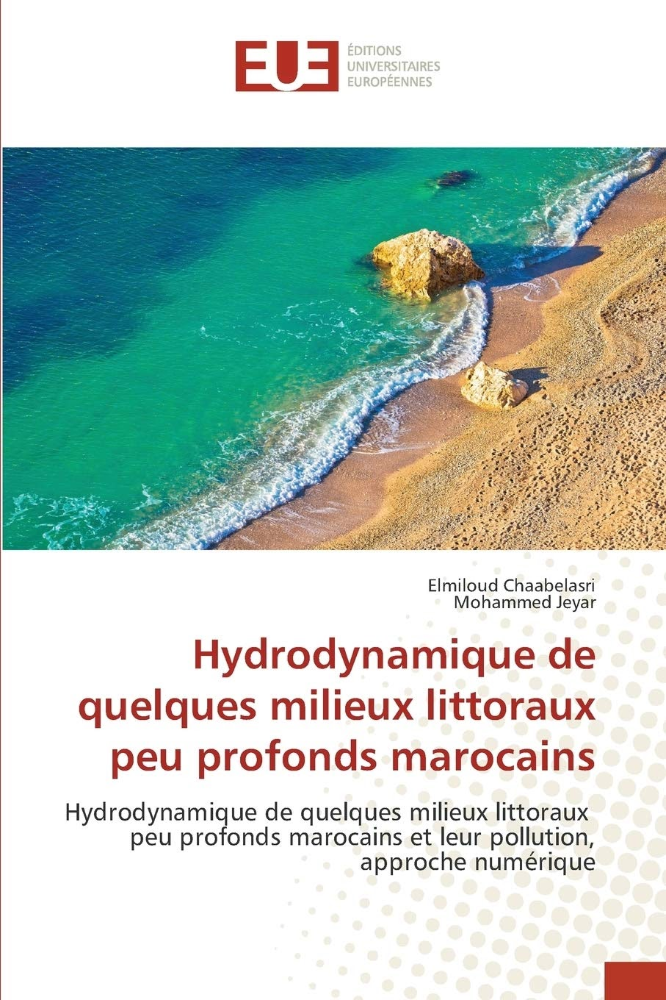

Books [Fr]

Hydrodynamique de quelques milieux littoraux peu profonds marocains et leur pollution, approche numérique
Cet ouvrage est une présentation et application d'un modèle numérique,
que nous avons développé, basé sur les équations de Saint-Venant pour le traitement des écoulements d'eau peu profonde résolues par la méthode des volumes finis. La méthode est utilisée pour la simulation de l'hydrodynamique de la lagune de Nador située au nord
du Maroc et un problème de transport d'un polluant non-actif dans la baie de Tanger (Maroc).